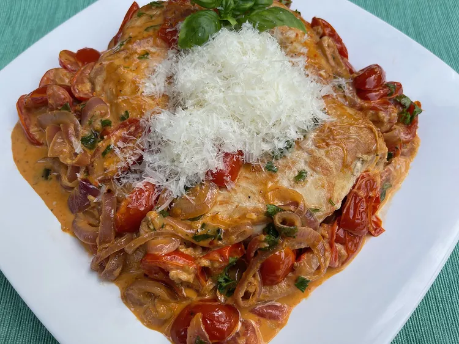

Skillet Chicken Breasts with Cherry Tomatoes

Description
One-pan dinners are a hit around our place! Easy cook, easy cleanup–what could be better? This skillet chicken with cherry tomatoes is tasty, too. We like it with simple buttered zucchini noodles or a green salad.
Ingredients
- 1.5 lbs boneless, skinless chicken breasts
- 0.5 teaspoon smoked paprika
- salt and freshly ground black pepper to taste
- 2 tablespoons herb-infused olive oil, or more as needed
- 1 tablespoon unsalted butter
- 0.5 red onion, thinly sliced
- 3 cloves garlic, minced
- 0.5 cup dry white wine
- 3 cups cherry tomatoes, halved
- 0.25 tablespoon minced fresh basil, plus more for garnish
- 0.25 cup grated Parmesan cheese
Steps
- Pat chicken breasts dry with paper towels, and season both sides with smoked paprika, salt, and pepper.
- In a large, non-stick skillet, heat herb-infused olive oil and butter over medium heat. When the butter is foamy, add chicken breasts and cook until browned on both sides, 4 to 5 minutes per side. Remove chicken to a plate and keep warm.
- To the same skillet, add red onion slices and cook until tender, 3 to 4 minutes. If the skillet seems dry, add a bit more olive oil. Stir in garlic; cook until fragrant, about 30 seconds.
- Add white wine; cook and stir for about 1 minute, then add cherry tomatoes and red pepper flakes.
- Stir in cream and cook until sauce is bubble. Return chicken and any accumulated juices to the skillet. Cover, reduce heat to low, and cook until chicken is no longer pink in the center and juices run clear, about 10 minutes. An instant-read thermometer inserted near the center should read at least 165 degrees F (74 degrees C).
- Sprinkle minced fresh basil and grated Parmesan over all. Garnish with additional basil, if desired.
Return to Main Page